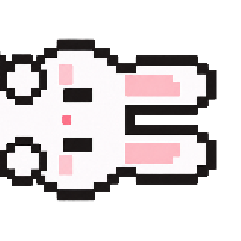
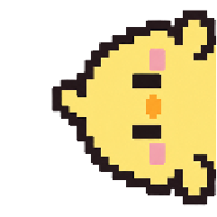
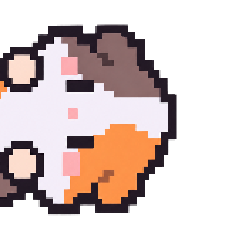
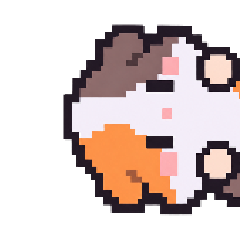

함께 집중하고,
함께 쉬어가요.
나만의 집중과 휴식 리듬을 만들어요.
시간이 끝나면 친구가 알려줄게요.
집중 시간25:00
집중하는 중
반복되는 하루에 작은 친구가 찾아왔어요.
화면 끝에 빼꼼, 필요한 순간에 짠.
나만의 동물 위젯, Twigly와 함께해요.
macOS 13+ · Apple Silicon 작고 다정한 데스크톱 동반자
✳ 26종의 다정한 친구들
⌘ 10가지 일상의 편리함
◌ 화면 끝에 가볍게
♡ 내 취향대로, 내 페이스대로
귀엽기만 한 친구가 아니에요.
집중할 때도, 잠깐 쉴 때도, 생각이 떠오를 때도.
작은 동물 하나가 당신의 하루에 꼭 필요한 쓸모가 됩니다.
취향에 맞는 친구에게 필요한 기능 하나.
클릭 한 번이면, 내 하루가 조금 가벼워져요.
나만의 집중과 휴식 리듬을 만들어요.
시간이 끝나면 친구가 알려줄게요.
놓치기 쉬운 일정, 오늘의 체크리스트,
번뜩 떠오른 메모까지 한곳에서.

점심, 퇴근, 휴일, 그리고 월급날.
설레는 순간까지 함께 세어봐요.

13가지 동물, 26가지 서로 다른 매력.
중복 없이 한 마리씩, 나만의 친구들을 모아요.
어떤 친구든 10가지 기능 중 하나를 연결할 수 있어요. 기능을 확정한 후에는 변경할 수 없어요.
만나고, 연결하고, 함께하기.
나만의 데스크톱을 만드는 세 단계.
손잡이를 돌리면 새로운 동물 친구가 짠.
아직 만나지 않은 친구만 찾아와요.

····◷나에게 필요한 기능을 하나 골라주세요.
한 번 정한 역할은 쭉 함께해요.

원하는 가장자리에 두고 클릭해보세요.
작은 말풍선에서 바로 사용할 수 있어요.
당신이 무엇을 하든, 곁에서 작은 도움을 줄게요.
자주 쓰는 문구는 한 번에 복사하고, 회의 일정은 미리 챙겨요. 퇴근까지 남은 시간도 친구와 함께라면 조금 더 즐거워요.
함께하기 전에 알아두면 좋은 이야기.
현재 빌드는 macOS 13 이상, Apple Silicon Mac을 지원해요. Windows 버전과 Intel Mac 지원 일정은 아직 정해지지 않았어요. 공개 배포 파일은 준비 중이에요.
어떤 동물이든 10가지 기능 중 하나를 선택할 수 있어요. 한 친구에게 하나의 기능을 연결하며, 확정한 기능은 바꿀 수 없으니 신중하게 골라주세요. 서로 다른 친구에게 같은 기능을 연결하는 것도 가능해요.
이미 만난 친구는 다음 뽑기에서 제외돼요. 아직 만나지 않은 친구들 사이에서 같은 확률로 한 마리를 만나며, 26종을 모두 모으면 추가로 뽑을 수 없어요.
캐릭터를 오른쪽 클릭한 다음 왼쪽 버튼으로 끌어 화면 왼쪽·오른쪽 가장자리로 옮겨보세요. 더블클릭하면 작은 기능 미리보기를 접고 펼칠 수 있어요. 보유 위젯 화면에서는 친구별로 표시하거나 숨길 수 있어요.
메모, 일정, 클립보드 등 위젯에 입력한 내용은 사용 중인 컴퓨터에 저장되며 Twigly 서버로 전송되지 않아요. 계정과 보유 캐릭터·연결 기능은 서버에서 관리해요. 위젯에 입력한 내용의 기기 간 동기화는 제공하지 않아요. 클립보드는 기능을 연결하고 기록을 켠 동안에만 최신 텍스트 5개를 보관해요.
현재 공개 출시를 준비 중이며 실제 결제는 연결되어 있지 않아요. 뽑기 1회 기준 가격은 1,500원으로 기획되어 있어요. 최종 판매 조건, 무료 제공 범위, 청약철회·환불 절차는 유료 서비스 시작 전에 안내할 예정이에요. 아래 환불 정책에서 현재 준비 상태를 확인할 수 있어요.
익숙한 데스크톱이 조금 더 다정해지는 방법.
macOS 13 이상 · Apple Silicon · 공개 배포 준비 중